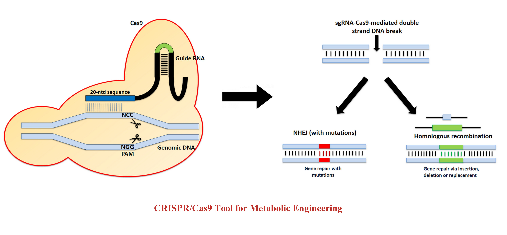
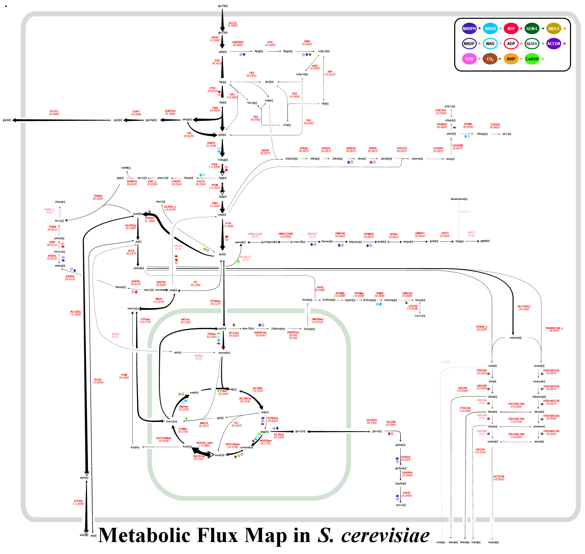
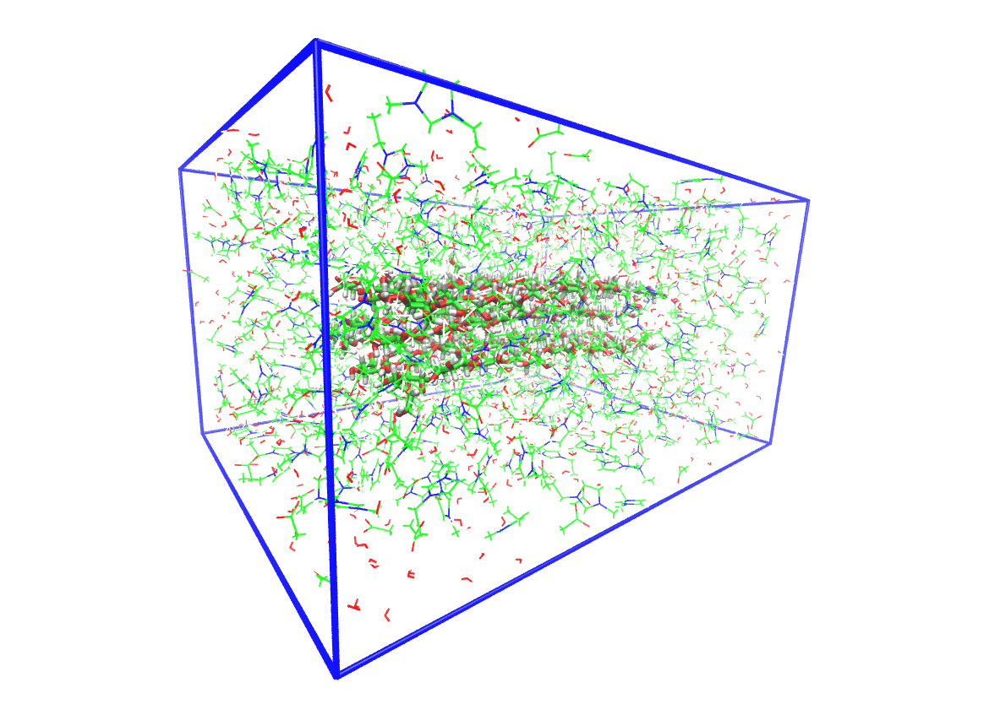

Our research domains
CRISPR/Cas9 for Genome Engineering :

Clustered Regularly Interspaced Short Palindromic Repeats (CRISPR) and CRISPR-associated (Cas)
proteins were
discovered in prokaryotes as an adaptive immune system against viral and plasmidal genome invasion.
The type
II CRISPR/Cas system uses a tracrRNA:crRNA hybrid to bind to Cas9 protein and guide it to create a
site-specific double stranded break on target templates. Modification of the tracrRNA:crRNA hybrid
to a single
guide RNA that has a customizable recognition sequence to guide DNA cleavage has become a very
popular
technique in gene editing. CRISPR/Cas9 technique also allows a marker-less genome manipulation that
enables
several modifications on the same strain. Post-cleavage of DNA with CRISPR/Cas9, the DNA repair
occurs via
non-homologous end joining (NHEJ) or homologous recombination (HR).
An increasing global energy
demand
and environmental concerns associated with petroleum fuels have necessitated the need for
alternative liquid
fuels (biofuels). Microbes such as yeasts can utilize sugars (generally hexoses) to produce
different
compounds such as free fatty acids (FFA) and its derivatives such as fatty-acid ethyl ester (FAEE),
fatty
alcohols and alkane/alkene. These biomolecules have energy content comparable to diesel and petrol,
making
them an important candidate for biofuels. However, yeasts do not generally utilize hexose sugars
such as
xylose due to lack of intrinsic pathways and transporters. In our lab, we are utilizing CRISPR/Cas9
tool to
engineer the metabolic pathways of different yeast strains for co-utilization of glucose and xylose
and
produce fatty acids (biofuels). We are also developing the CRISPR/Cas9 tool for certain industrially
relevant
yeasts.
Metabolic Flux Analysis and Metabolomics:

Metabolic Flux Analysis (MFA) is an important method for the quantitative estimation of
intracellular
metabolic flows through metabolic pathways in a variety of cellular metabolism of relevance to
medicine and
biotechnology. For more complete understanding of biochemical pathways along with a quantitative
analysis,
metabolic flux analysis is an important technique. Metabolic flux analysis is generally carried out
with
isotopic tracers (e.g., 13C) to elucidate the pathways followed by labeled metabolites. Mass
spectrometry is
absolutely instrumental to record the labeling patterns in metabolic intermediates and end products.
Our
current efforts aim at developing new approaches to identify the rate limiting steps in sugar
utilization for
biofuels production in the engineered yeast strains.
Molecular Dynamics Simulation :

microcrystal solvated in an IL-Water solvent mixture
Molecular Dynamics Simulation is a classical mechanics based computational approach that enables to
investigate the behaviour of a microsystem consisting a large number of interacting particles and to
predict
the bulk properties of the macrosystem at molecular level. GPU accelerated high-performance
computing has
revolutionized the theoretical approached to study the structure and dynamics of biological
macromolecules
from a nanosecond (ns) to milliseconds (ms) timescale in recent years.
Our lab is particularly
interested to explore the molecular mechanism of various biological processes in the domain of
carbohydrates
as well as protein chemistry using MD simulation. Currently, we are focussing to understand the
dissolution of
cellulose in Ionic liquid (1-Ethyl-3-methylimidazolium acetate) and water mixtures for designing a
cost-effective and optimized lignocellulosic biomass pretreatment process using IL. We are also
working to
develop theoretical insights behind the IL tolerance of thermostable cellulolytic enzymes, which
will guide
the experimental biologists for engineering the existing cellulase with improved saccharification
kinetics.
Moreover, molecular simulations of proteins reveal multiple conformational states in a trajectory
ensemble
which can explain its in-vivo functionality. Steered Molecular Dynamics are also routinely carried
out in our
lab to study the force induced unfolding of proteins.
Systems Biology of Gut Microbiome :

Diverse environmental condition reinforce the growth of different microbial communities with
specialized characteristic. Metagenomic study along with computational technique disclose the
structural and functional complexity of microbial niche. Culture independent approach of
metagenomics helps to conquer the hurdle of characterization of unculturable microbes, enhancing
clarity of community based microbiology. Gut microbiota has been one of the most fascinating area of
research during several decades because of enormous microbial diversity and their metabolic
potential. We are interested to study the cumulative potential of different gut microbiota that
effectively translate the lignocellusoic biomass to biofuel. A system level understanding of the
microbial interdependency and cross communication will decrypt the natural system lignocellulose
degradative system leading towards the designing of a successful invitro mechanism for effective
biomass conversion for biofuel production. Systematic mathematical model development of inter
species interaction will help to identify key-species (influencer) in microbial communities having
powerful lignocellulolytic property.